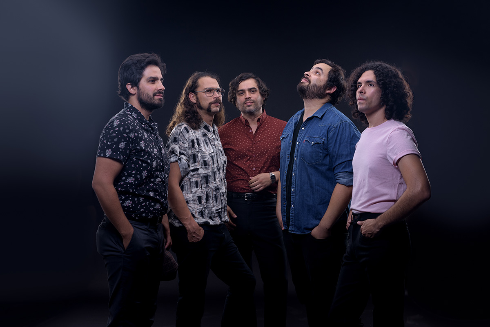

Enjambre

Biografía
Enjambre es formado en un principio por los hermanos Zacatecanos Luis (voz y guitarra) y Rafael Navejas,
(bajo), Romeo Navejas (batería) en el 2001. Con esta formación la banda empieza a tocar presentaciones en el
Sur de California y graban un demo de 3 canciones.
A finales del 2001 Romeo deja la banda y es reemplazado a principios del 2002 por el baterista chileno Nico
Saavedra. Durante el verano de este mismo año la banda como trio ensaya arduamente y graba un demo de 2
canciones donde figuran "Gravedad" y "Volver a Caer". Luego de empezar con una serie de varias
presentaciones en California, Osamu Nishitani, de origen japones/britanico, se integra al grupo en Agosto de
este año tomando la posición de guitarrista trayendo también un nuevo elemento para la música vía
sintetizadores de guitarra.
Una vez como cuarteto, el grupo comienza una serie intensiva de presentaciones en vivo, televisión y giras
locales durante el 2003. En Abril la banda graba un demo de 8 canciones el cual fue vendido durante las
presentaciones de este año. Luego en Septiembre comienzan a grabar su primer disco "Consuelo En Domingo" en
Santa Ana, California.
Top 3 Mejores Álbumes y sus respectivas canciones.
-
El Segundo es Felino
- Manía Cardiaca
- Néctar
- Impacto
-
Imperfecto extraño
- Vida en el espejo
- Detéstame
- Tercer tipo
-
Enjambre y los huéspedes del Orbe
- Falacia
- Somos Ajenos
- El Ordinario
Para conocer más del artista, puedes reproducir directamente desde este sitio o bien,
da clic en este enlace